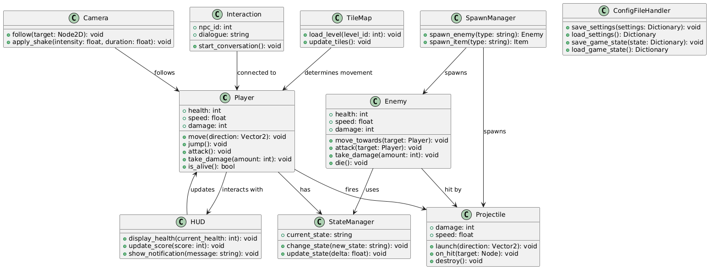

3.1. Statikus modell
3.1.1. Kapcsolatok pontosítása
A rendszerben az eddig azonosított osztályok közötti kapcsolatokat megvizsgáltuk, megneveztük, és
meghatároztuk azok szerepkörét és számosságát. Ennek célja a kapcsolatok pontosítása, valamint a
rendszer átláthatóságának növelése.
-
Player és StateManager:
-
Kapcsolat neve: „használja”.
-
Szerepkör: A Player osztály a StateManager segítségével kezeli az aktuális állapotát.
-
Számosság: 1 (egy játékosnak pontosan egy állapotkezelője van).
-
Camera és Player:
-
Kapcsolat neve: „követi”.
-
Szerepkör: A Camera osztály a játékost követi, hogy a mozgást dinamikusan megjelenítse
-
Számosság: 1 (egy kamera egy játékost követ).
-
SpawnManager és Enemy:
-
Kapcsolat neve: „létrehozza”.
-
Szerepkör: A SpawnManager osztály felelős az Enemy példányok létrehozásáért.
-
Számosság: 1..* (egy SpawnManager több Enemy-t is létrehozhat).
3.1.2. Attribútumok azonosítása
Minden osztályhoz hozzárendeltük a legfontosabb attribútumokat, amelyek leírják az adott osztályt és
annak viselkedését.
-
Player:
-
health: A játékos életereje.
-
speed: A játékos mozgási sebessége.
-
damage: A támadáskor okozott sebzés mértéke.
-
Enemy:
-
health: Az ellenség életereje.
-
speed: Az ellenség mozgási sebessége.
-
damage: Az ellenség által okozott sebzés.
-
Projectile:
-
damage: A lövedék által okozott sebzés mértéke.
-
speed: A lövedék sebessége.
-
Interaction (új osztály):
-
npc_id: Az NPC azonosítója.
-
dialogue: Az aktuális párbeszéd szövege.
3.2. Dinamikus modell
3.2.1. Player állapotdiagramja
Az alábbi diagram a Player osztály viselkedését ábrázolja. A játékos különböző állapotokat vehet fel,
például mozgás, ugrás vagy támadás közben. Az állapotok közötti váltásokat a felhasználói bemenetek vagy
bizonyos események váltják ki.

-
Állapotok:
-
Idle: A játékos nem mozog, álló helyzetben van.
-
Moving: A játékos mozgásban van (balra vagy jobbra halad).
-
Jumping: A játékos ugrik.
-
Attacking: A játékos támad.
-
Dead: A játékos meghalt.
-
Állapotátmenetek:
-
Idle → Moving: Ha a játékos balra vagy jobbra mozgásra utasítja a
karaktert.
-
Idle → Jumping: Ha a játékos megnyomja az ugrásgombot.
-
Moving → Attacking: Ha a játékos támadásgombot nyom mozgás közben.
-
Any state → Dead: Ha a játékos életereje eléri a nullát.
-
Jumping → Idle: Ha a játékos földet ér ugrás után.
-
Moving → Idle: Ha a játékos abbahagyja a mozgást.
3.2.2. Enemy állapotdiagramja
Az alábbi diagram az Enemy osztály állapotait mutatja be. Az ellenség képes észlelni a játékost,
követni, támadni, vagy éppen inaktív (Idle) állapotban maradni.

-
Állapotok:
-
Idle: Az ellenség nem észlel játékost, nem mozog.
-
Chasing: Az ellenség észleli a játékost, és elkezdi üldözni.
-
Attacking: Az ellenség a játékos közelébe érve támad.
-
Dying: Az ellenség haldoklik, miután az életereje elfogyott.
-
Állapotátmenetek:
-
Idle → Chasing: Ha az ellenség érzékeli a játékos jelenlétét.
-
Chasing → Attacking: Ha az ellenség elérte a játékos támadási területét.
-
Attacking → Chasing: Ha a játékos eltávolodik az ellenségtől.
-
Any state → Dying: Ha az ellenség életereje eléri a nullát.
3.2.3. Projectile állapotdiagramja
A Projectile osztály dinamikus viselkedése az alábbi állapotokra osztható.

-
Állapotok:
-
Idle: A lövedék nincs kilőve, várakozik.
-
Moving: A lövedék a cél felé halad.
-
Hit: A lövedék elérte a célját és sebzést okozott.
-
Destroyed: A lövedék megsemmisül, miután elérte a célját vagy a
hatótávolságán kívülre került.
-
Állapotátmenetek:
-
Idle → Moving: Ha a lövedéket elindítják.
-
Moving → Hit: Ha a lövedék eléri a célpontját.
-
Moving → Destroyed: Ha a lövedék hatótávolságon kívülre kerül.
-
Hit → Destroyed: Ha a lövedék a célpont eltalálása után elpusztul.
3.3. Funkcionális modell
3.3.1 Játékos mozgása
A játékos mozgását a felhasználói bemenetek vezérlik. Az InputHandler osztály figyeli a játékos által
megnyomott gombokat (pl. balra, jobbra, ugrás), és továbbítja az információt a Player osztály felé. A
Player osztály ennek alapján frissíti a pozícióját, amit a Camera osztály követ.
Adatáramlás:
-
Az InputHandler osztály érzékeli a felhasználó által végrehajtott bemeneteket (pl. billentyűzet vagy
kontroller használata).
-
Az InputHandler továbbítja a mozgási parancsot a Player osztálynak.
-
A Player osztály frissíti a pozícióját a mozgás irányában.
-
A Camera osztály a játékos új pozícióját követve frissíti a nézetet.
3.3.2 Szintváltás folyamata
Amikor a játékos eléri a szint végét, a NextLevel osztály érzékeli az interakciót, és betölti a
következő szinthez tartozó térképet. Az új szinthez tartozó adatokat a ConfigFileHandler osztály kezeli,
amely biztosítja a következő szint beállításainak betöltését. A TileMap osztály felelős az új szint
térképének inicializálásáért.
Adatáramlás:
-
A Player osztály érzékelteti az interakciót a NextLevel osztállyal.
-
A NextLevel osztály a ConfigFileHandler segítségével betölti a következő szint konfigurációit.
-
A TileMap osztály inicializálja a szinthez tartozó csempéket, és beállítja a szint objektumait.
3.3.3 Ellenség érzékelése és támadása
Az Enemy osztály a DetectionArea segítségével érzékeli a játékos jelenlétét. Ha a játékos a támadási
területen belül van, az Enemy támadást indít, amely csökkenti a Player osztály health attribútumát. Az
eseményt követően a HUD osztály frissíti az életerő kijelzést.
Adatáramlás:
-
A DetectionArea érzékeli a játékos pozícióját, ha az az ellenség látóterébe kerül.
-
Az Enemy osztály ellenőrzi, hogy a játékos a támadási területen belül van-e.
-
Ha igen, az Enemy támadást indít, amely csökkenti a Player életerejét.
-
A HUD frissíti az életerő kijelzést a változásoknak megfelelően.
3.3.4 Lövedék indítása és célba érése
Amikor a játékos vagy az ellenség lövedéket indít, a Projectile osztály kezeli annak mozgását és
interakcióit. A lövedék célba érve sebzést okoz, majd megsemmisül.
Adatáramlás:
-
A Player vagy Enemy osztály indítja a lövedéket a Projectile osztály segítségével.
-
A Projectile osztály frissíti a lövedék pozícióját.
-
Ha a lövedék eléri a célpontot, csökkenti annak életerejét.
-
A lövedék megsemmisül, miután elérte a célpontot vagy túllépte a hatótávolságot.
3.3.5 Adatáramlás összefoglalása
Az alábbi táblázat összefoglalja a funkciók közötti adatáramlásokat:
| Funkció |
Forrás |
Cél |
Adat |
| Játékos mozgása |
InputHandler |
Player |
Mozgási utasítás |
| Kamera követése |
Player |
Camera |
Játékos pozíciója |
| Szintváltás |
Player |
NextLevel |
Szintváltási esemény |
| Ellenség támadása |
DetectionArea |
Enemy |
Játékos pozíciója |
| Lövedék indítása |
Player/Enemy |
Projectile |
Lövedék indítási adatai |
3.4. Operációk azonosítása
-
Player operációi:
-
move(direction: Vector2): A játékos mozgását végzi a megadott irányban.
Paraméterek: direction - a mozgás iránya.
-
jump(): A játékos ugrását hajtja végre.
-
attack(): A játékos támadást indít.
-
take_damage(amount: int): Csökkenti a játékos életerejét a megadott
értékkel. Paraméterek: amount - a sebzés mértéke.
-
is_alive() -> bool: Ellenőrzi, hogy a játékos életben van-e. Visszatérési
érték: True, ha a játékos életereje nagyobb, mint 0.
-
Enemy operációi:
-
move_towards(target: Player): Az ellenség a megadott célpont, a játékos
felé mozog.
Paraméterek: target - a követendő játékos objektum
-
attack(target: Player): Az ellenség megtámadja a játékost.
Paraméterek: target - a megtámadott játékos.
-
take_damage(amount: int): Csökkenti az ellenség életerejét.
Paraméterek: amount - a sebzés mértéke.
-
die() Az ellenség eltávolítása, ha az életereje eléri a nullát.
Az Enemy osztály operációit a funkcionális modell elemzésével határoztuk meg. Az attack és
move_towards operációkat az ellenség játékossal való interakcióihoz kötöttük.
-
Camera operációi:
-
follow(target: Node2D): A kamera követi a megadott célt, például a
játékost.
Paraméterek: target - a követendő objektum.
-
apply_shake(intensity: float, duration: float): Rázkódási effekt
alkalmazása, például robbanások esetén.
Paraméterek:
-
intensity: A rázkódás intenzitása.
-
duration: A rázkódás időtartama.
-
SpawnManager operációi:
-
spawn_enemy(type: String): Új ellenség létrehozása a megadott típus
alapján.
Paraméterek: type - az ellenség típusa.
-
spawn_item(type: String): Új tárgy létrehozása a megadott típus alapján.
Paraméterek: type - a tárgy típusa.
A SpawnManager operációit a szintváltási és játékmechanikai tevékenységek alapján azonosítottuk.
-
Projectile operációi
-
launch(direction: Vector2): A lövedék elindítása a megadott irányban.
Paraméterek: direction - a lövedék iránya.
-
on_hit(target: Node): A lövedék megsemmisítése, miután elérte célját vagy
hatótávját
-
destroy(): A lövedék megsemmisítése, miután elérte célját vagy hatótávját
A Projectile operációit az ellenségekkel és játékossal való interakciókra, valamint a
funkcionális modellben leírt lövedékkezelési folyamatra alapoztuk.
3.5. Az analízis modell osztálydiagramja
Az osztálydiagramot az attribútumokkal és operációkkal kiegészítve csatoltuk. Az ábra bemutatja az
osztályok közötti kapcsolatrendszert, és az alrendszerek közötti együttműködést is.

3.6. Az analízis modell osztályainak listája
3.6.1. Player osztály
Felelőssége, feladata: A Player osztály kezeli a játékos karakterét, beleértve a
mozgást, az interakciókat, az állapotokat és a támadásokat. Felelős a játékos alapvető
funkcionalitásainak biztosításáért és a környezethez való kapcsolódásért.
Együttműködők:
-
StateManager: A játékos állapotainak kezelése.
-
HUD: A játékos életerejének és pontszámának frissítése.
-
Projectile: A játékos által indított lövedékek kezelése.
-
Camera: A játékos követése a nézetben.
Attribútumok:
-
health: int – A játékos életereje.
-
speed: float – A mozgási sebessége.
-
damage: int – A támadások által okozott sebzés
Operációk:
-
move(direction: Vector2): void – Mozgás végrehajtása adott irányba.
-
jump(): void – Ugrás végrehajtása.
-
take_damage(amount: int): void – Sebzés alkalmazása.
-
is_alive(): bool – Ellenőrzi, hogy a játékos életben van-e.
3.6.2. BossEnemy osztály
Felelőssége, feladata: A BossEnemy osztály a főellenfelek logikáját kezeli, beleértve a
speciális támadások, mozgások és fázisváltások megvalósítását.
Együttműködők:
- Projectile: A boss által generált lövedékek kezelése.
- Player: A játékos pozíciójának figyelése és támadások irányítása.
- Global: A játék állapotainak nyomon követése és a boss fázisváltásainak triggerelése.
Attribútumok:
- health: int – A boss életereje.
- phase: int – Az aktuális fázis az ellenséggel való harc során.
- damage: int – Az alap támadások sebzése.
Operációk:
- attack_pattern(): void – A boss speciális támadási mintázatának végrehajtása.
- take_damage(amount: int): void – Sebzés alkalmazása a boss-on.
- change_phase(): void – Átállás a következő fázisra, ha az életerő eléri a küszöbértéket.
3.6.3. Projectile osztály
Felelőssége, feladata: A Projectile osztály kezeli a lövedékek mozgását, sebzését és
interakcióit a játék világával.
Együttműködők:
- Player: A játékos által kilőtt lövedékek kezelése.
- BossEnemy: A boss által indított lövedékek logikája.
- Global: Lövedékek globális állapotainak követése.
Attribútumok:
- speed: float – A lövedék mozgási sebessége.
- damage: int – A lövedék által okozott sebzés.
- lifetime: float – Az idő, amíg a lövedék aktív marad.
Operációk:
- move(): void – A lövedék mozgatása a sebesség és irány alapján.
- check_collision(): bool – Ellenőrzi, hogy a lövedék eltalált-e valamit.
- destroy(): void – A lövedék megsemmisítése.
3.6.4. HUD osztály
Felelőssége, feladata: A HUD osztály megjeleníti a játékos életerejét, pontszámát és
egyéb információkat a képernyőn.
Együttműködők:
- Player: Az életerő és pontszám információk lekérése.
- Global: Állapotadatok vizualizálása.
Attribútumok:
- health_display: UIElement – A játékos életerejét mutató elem.
- score_display: UIElement – A játékos pontszámát mutató elem.
Operációk:
- update_health(new_health: int): void – Frissíti a megjelenített életerő értékét.
- update_score(new_score: int): void – Frissíti a megjelenített pontszámot.
3.6.5. Global osztály
Felelőssége, feladata: A Global osztály a játék általános állapotainak kezelésére
szolgál, beleértve a pontszámokat, a globális beállításokat és a szkriptek közötti kommunikációt.
Együttműködők:
- Player, BossEnemy, HUD: A globális változók szinkronizálása és elérése.
Attribútumok:
- score: int – Az aktuális pontszám.
- game_state: string – A játék aktuális állapota (például "running", "paused").
Operációk:
- save_game(): void – Az aktuális játékállapot mentése.
- load_game(): void – Előző játékállapot betöltése.
3.6.6. Enemy osztály
Felelőssége, feladata: Az Enemy osztály a játék világában megjelenő általános
ellenségek logikáját kezeli. Mozgásuk, támadásuk és interakcióik a játékossal itt kerülnek
meghatározásra.
Együttműködők:
- Player: A játékos karakter, akit támadnak.
- Global: Állapotadatok és események szinkronizálása.
Attribútumok:
- health: int – Az ellenség életereje.
- speed: float – Az ellenség mozgási sebessége.
- damage: int – Az általuk okozott sebzés mértéke.
Operációk:
- move_towards_player(player_position: Vector2): void – Az ellenség mozgása a játékos irányába.
- attack(): void – Támadás végrehajtása, ha közel vannak a játékoshoz.
- take_damage(amount: int): void – Sebzés alkalmazása az ellenségen.
- is_alive(): bool – Ellenőrzi, hogy az ellenség életben van-e.
3.6.6.1 Enemy leszármazottjai
Slime osztály
Felelőssége, feladata: Az Enemy osztályból származó Slime logikájának meghatározása.
Attribútumok:
- health: int – Életerő.
- damage: int – Támadás sebzése.
- speed: float – Mozgási sebesség.
Operációk:
- attack(): void – Támadás végrehajtása.
- move(): void – Mozgás végrehajtása.
- take_damage(amount: int): void – Sebzés alkalmazása a karakteren.
Spider osztály
Felelőssége, feladata: Az Enemy osztályból származó Spider logikájának meghatározása.
Attribútumok:
- health: int – Életerő.
- damage: int – Támadás sebzése.
- speed: float – Mozgási sebesség.
Operációk:
- attack(): void – Támadás végrehajtása.
- move(): void – Mozgás végrehajtása.
- take_damage(amount: int): void – Sebzés alkalmazása a karakteren.
Ghost osztály
Felelőssége, feladata: Az Enemy osztályból származó Ghost logikájának meghatározása.
Attribútumok:
- health: int – Életerő.
- damage: int – Támadás sebzése.
- speed: float – Mozgási sebesség.
Operációk:
- attack(): void – Támadás végrehajtása.
- move(): void – Mozgás végrehajtása.
- take_damage(amount: int): void – Sebzés alkalmazása a karakteren.
Gnome osztály
Felelőssége, feladata: Az Enemy osztályból származó Gnome logikájának meghatározása.
Attribútumok:
- health: int – Életerő.
- damage: int – Támadás sebzése.
- speed: float – Mozgási sebesség.
Operációk:
- attack(): void – Támadás végrehajtása.
- move(): void – Mozgás végrehajtása.
- take_damage(amount: int): void – Sebzés alkalmazása a karakteren.
Wizard osztály
Felelőssége, feladata: Az Enemy osztályból származó Wizard logikájának meghatározása.
Attribútumok:
- health: int – Életerő.
- damage: int – Támadás sebzése.
- speed: float – Mozgási sebesség.
Operációk:
- attack(): void – Támadás végrehajtása.
- move(): void – Mozgás végrehajtása.
- take_damage(amount: int): void – Sebzés alkalmazása a karakteren.
Troll osztály
Felelőssége, feladata: Az Enemy osztályból származó Troll logikájának meghatározása.
Attribútumok:
- health: int – Életerő.
- damage: int – Támadás sebzése.
- speed: float – Mozgási sebesség.
Operációk:
- attack(): void – Támadás végrehajtása.
- move(): void – Mozgás végrehajtása.
- take_damage(amount: int): void – Sebzés alkalmazása a karakteren.
Elf osztály
Felelőssége, feladata: Az Enemy osztályból származó Elf logikájának meghatározása.
Attribútumok:
- health: int – Életerő.
- damage: int – Támadás sebzése.
- speed: float – Mozgási sebesség.
Operációk:
- attack(): void – Támadás végrehajtása.
- move(): void – Mozgás végrehajtása.
- take_damage(amount: int): void – Sebzés alkalmazása a karakteren.
3.6.7. ScreenManager osztály
Felelőssége, feladata: A ScreenManager osztály kezeli a játék képernyőinek (főmenü,
beállítások, szünet menü, stb.) váltását és logikáját.
Együttműködők:
- HUD: A megfelelő képernyők elemének frissítése.
- Global: A játék állapotának megjelenítése.
Attribútumok:
- current_screen: string – Az aktuálisan megjelenített képernyő neve.
Operációk:
- switch_to(screen_name: string): void – Átvált a megadott képernyőre.
- update_ui(): void – Frissíti az aktuális képernyő elemeit.
3.6.8. PowerUp osztály
Felelőssége, feladata: A PowerUp osztály kezeli a játékos által megszerzett bónuszokat,
például extra életerőt, sebességet vagy új képességeket.
Együttműködők:
- Player: A megszerzett bónusz alkalmazása.
Attribútumok:
- type: string – A bónusz típusa (például "health", "speed", "damage").
- value: int – A bónusz mértéke.
Operációk:
- apply_to_player(player: Player): void – A bónusz hatásának alkalmazása a játékosra.
- destroy(): void – A bónusz eltávolítása a játéktérről.
3.6.9. LevelManager osztály
Felelőssége, feladata: A LevelManager osztály kezeli a különböző pályák betöltését, az
ellenségek spawnolását, valamint a pályaállapotok mentését és betöltését.
Együttműködők:
- Global: A játék állapotainak szinkronizálása.
- Enemy: Az ellenségek generálása és irányítása.
Attribútumok:
- current_level: int – Az aktuális szint száma.
- spawn_points: Array<Vector2> – Az ellenségek és tárgyak spawnolási pontjai.
Operációk:
- load_level(level_number: int): void – Betölti a megadott szintet.
- spawn_enemy(enemy_type: string, position: Vector2): void – Ellenség generálása adott pozícióban.
- save_level_state(): void – A szint aktuális állapotának mentése.
3.6.9.1 Level leszármazottjai
Level_0 - Tutorial osztály
Felelőssége, feladata: A Level osztályból származó Level_0 - Tutorial logikájának és
pályaelemeinek definiálása.
Attribútumok:
- difficulty: int – A szint nehézségi szintje.
- spawn_points: Array – Ellenségek és objektumok elhelyezési pontjai.
Operációk:
- load_level(): void – A szint betöltése.
- save_state(): void – A szint állapotának mentése.
- clear_level(): void – A szint tisztítása a megjelenített objektumoktól.
Level_1 - Dark Forest osztály
Felelőssége, feladata: A Level osztályból származó Level_1 - Dark Forest logikájának és
pályaelemeinek definiálása.
Attribútumok:
- difficulty: int – A szint nehézségi szintje.
- spawn_points: Array – Ellenségek és objektumok elhelyezési pontjai.
Operációk:
- load_level(): void – A szint betöltése.
- save_state(): void – A szint állapotának mentése.
- clear_level(): void – A szint tisztítása a megjelenített objektumoktól.
Level_2 - Old Castle osztály
Felelőssége, feladata: A Level osztályból származó Level_2 - Old Castle logikájának és
pályaelemeinek definiálása.
Attribútumok:
- difficulty: int – A szint nehézségi szintje.
- spawn_points: Array – Ellenségek és objektumok elhelyezési pontjai.
Operációk:
- load_level(): void – A szint betöltése.
- save_state(): void – A szint állapotának mentése.
- clear_level(): void – A szint tisztítása a megjelenített objektumoktól.
Level_3 - Dungeon osztály
Felelőssége, feladata: A Level osztályból származó Level_3 - Dungeon logikájának és
pályaelemeinek definiálása.
Attribútumok:
- difficulty: int – A szint nehézségi szintje.
- spawn_points: Array – Ellenségek és objektumok elhelyezési pontjai.
Operációk:
- load_level(): void – A szint betöltése.
- save_state(): void – A szint állapotának mentése.
- clear_level(): void – A szint tisztítása a megjelenített objektumoktól.
Level_4 - The Underground I. osztály
Felelőssége, feladata: A Level osztályból származó Level_4 - The Underground I.
logikájának és pályaelemeinek definiálása.
Attribútumok:
- difficulty: int – A szint nehézségi szintje.
- spawn_points: Array – Ellenségek és objektumok elhelyezési pontjai.
Operációk:
- load_level(): void – A szint betöltése.
- save_state(): void – A szint állapotának mentése.
- clear_level(): void – A szint tisztítása a megjelenített objektumoktól.
Level_5 - The Underground II. osztály
Felelőssége, feladata: A Level osztályból származó Level_5 - The Underground II.
logikájának és pályaelemeinek definiálása.
Attribútumok:
- difficulty: int – A szint nehézségi szintje.
- spawn_points: Array – Ellenségek és objektumok elhelyezési pontjai.
Operációk:
- load_level(): void – A szint betöltése.
- save_state(): void – A szint állapotának mentése.
- clear_level(): void – A szint tisztítása a megjelenített objektumoktól.
Level_6 - Boss Creature's Gate osztály
Felelőssége, feladata: A Level osztályból származó Level_6 - Boss Creature's Gate
logikájának és pályaelemeinek definiálása.
Attribútumok:
- difficulty: int – A szint nehézségi szintje.
- spawn_points: Array – Ellenségek és objektumok elhelyezési pontjai.
Operációk:
- load_level(): void – A szint betöltése.
- save_state(): void – A szint állapotának mentése.
- clear_level(): void – A szint tisztítása a megjelenített objektumoktól.
3.6.10. ConfigFileHandler osztály
Felelőssége, feladata: A ConfigFileHandler osztály kezeli a játék konfigurációs fájlait,
például a beállításokat és a mentéseket.
Együttműködők:
- Global: Állapotok és konfigurációs adatok mentése és betöltése.
Attribútumok:
- config_path: string – A konfigurációs fájl elérési útja.
Operációk:
- load_config(): Dictionary – Betölti a konfigurációs fájl tartalmát.
- save_config(data: Dictionary): void – Elmenti a megadott adatokat a konfigurációs fájlba.
3.6.11. Camera osztály
Felelőssége, feladata: A Camera osztály követi a játékos karakterét vagy egyéb fontos
eseményeket a játéktéren.
Együttműködők:
- Player: A kamera követi a játékos mozgását.
- LevelManager: A kamera igazítása a pálya határaihoz.
Attribútumok:
- focus_target: Node – Az objektum, amit a kamera követ.
- bounds: Rect2 – A kamera mozgási határai.
Operációk:
- follow(target: Node): void – A kamera fókuszának beállítása egy adott objektumra.
- adjust_to_bounds(bounds: Rect2): void – A kamera mozgási tartományának beállítása.
3.6.12. AnimationManager osztály
Felelőssége, feladata: Az AnimationManager osztály a különböző játékobjektumok (játékos,
ellenségek, lövedékek) animációinak kezeléséért felel. Biztosítja, hogy a megfelelő animációk a
megfelelő időben játszódjanak le.
Együttműködők:
- Player, Enemy, Projectile: Az ezekhez tartozó animációk futtatása.
- Global: Játékállapot alapján aktiválja vagy állítja le az animációkat.
Attribútumok:
- current_animation: string – Az aktuálisan futó animáció neve.
- animations: Dictionary – Elérhető animációk listája a neveik szerint.
Operációk:
- play(animation_name: string): void – Elindítja a megadott animációt.
- stop(): void – Leállítja az aktuális animációt.
- is_playing(animation_name: string): bool – Ellenőrzi, hogy egy animáció éppen fut-e.
3.6.13. AudioManager osztály
Felelőssége, feladata: Az AudioManager osztály kezeli a játék zenéit és hanghatásait.
Felelős a hangok betöltéséért, lejátszásáért és hangerőszabályozásért.
Együttműködők:
- Global: Hangbeállítások és állapotok megosztása.
- LevelManager, ScreenManager: Különböző pályákhoz és képernyőkhöz tartozó zenék lejátszása.
Attribútumok:
- music_volume: float – A zene hangerőszintje.
- effects_volume: float – A hanghatások hangerőszintje.
- current_music: string – Az éppen játszott zene neve.
Operációk:
- play_music(track_name: string): void – Elindít egy adott zeneszámot.
- play_effect(effect_name: string): void – Lejátszik egy adott hanghatást.
- set_volume(type: string, volume: float): void – Beállítja a zene vagy hanghatások hangerőszintjét.
3.6.14. Collectible osztály
Felelőssége, feladata: A Collectible osztály kezeli a pályán megjelenő gyűjthető
tárgyakat, például érméket, kulcsokat vagy különleges tárgyakat.
Együttműködők:
- Player: A játékos interakcióba léphet a gyűjthető tárgyakkal.
- HUD: A játékos által megszerzett tárgyak vizualizálása.
Attribútumok:
- type: string – A tárgy típusa (pl. "coin", "key").
- value: int – A tárgy értéke vagy hatása.
Operációk:
- collect(player: Player): void – A tárgy összegyűjtése a játékos által.
- destroy(): void – A tárgy eltávolítása a játéktérről.
3.6.15. Trap osztály
Felelőssége, feladata: A Trap osztály a pályán elhelyezett csapdákat kezeli, amelyek
veszélyt jelentenek a játékosra vagy más objektumokra.
Együttműködők:
- Player, Enemy: Az objektumok, amelyeket a csapdák érinthetnek.
Attribútumok:
- damage: int – A csapda által okozott sebzés mértéke.
- activation_time: float – A csapda aktiválási ideje.
Operációk:
- activate(): void – A csapda aktiválása, amely sérülést okozhat.
- reset(): void – A csapda visszaállítása, hogy újra aktiválható legyen.
3.6.16. DialogueManager osztály
Felelőssége, feladata: A DialogueManager osztály kezeli a párbeszédeket a játékban,
beleértve a szövegek megjelenítését és a párbeszédfolyamatok irányítását.
Együttműködők:
- ScreenManager: A párbeszédablakok megjelenítése és eltüntetése.
- Player: A játékos mozgásának és interakcióinak korlátozása párbeszédek során.
Attribútumok:
- current_dialogue: string – Az aktuális párbeszéd szövege.
- is_active: bool – Jelzi, hogy van-e aktív párbeszéd.
Operációk:
- start_dialogue(dialogue_id: string): void – Elindít egy adott párbeszédet.
- end_dialogue(): void – Befejezi az aktuális párbeszédet.
- next_line(): void – A párbeszéd következő sorára ugrik.
3.6.17. Inventory osztály
Felelőssége, feladata: Az Inventory osztály kezeli a játékos által birtokolt tárgyakat,
például fegyvereket, kulcsokat vagy más speciális eszközöket.
Együttműködők:
- Player: Az inventory használata és kezelése.
- Collectible: Az inventory elemeinek hozzáadása.
Attribútumok:
- items: Dictionary – Az inventory-ban tárolt tárgyak és mennyiségük.
Operációk:
- add_item(item: string, amount: int): void – Új tárgy hozzáadása az inventory-hoz.
- remove_item(item: string, amount: int): void – Tárgy eltávolítása az inventory-ból.
- has_item(item: string): bool – Ellenőrzi, hogy a játékos rendelkezik-e az adott tárggyal.
3.6.18. SpawnManager osztály
Felelőssége, feladata: A SpawnManager osztály kezeli a játékbeli objektumok
(ellenségek, lövedékek, collectible tárgyak) megjelenését és időzítését.
Együttműködők:
- Enemy, Collectible, Projectile: Az általuk kezelt objektumok létrehozása és eltávolítása.
- LevelManager: A szintekhez tartozó spawnolási mintázatok kezelése.
Attribútumok:
- spawn_points: Array – Az objektumok megjelenésének helyszínei.
- spawn_rate: float – Az objektumok megjelenési sebessége.
Operációk:
- spawn_object(object_type: string, position: Vector2): void – Létrehoz egy adott típusú objektumot az
adott helyen.
- clear_all(): void – Minden spawnolt objektum eltávolítása.
3.6.19. AchievementManager osztály
Felelőssége, feladata: Az AchievementManager osztály kezeli a játékos által elért
eredményeket és trófeákat.
Együttműködők:
- Player, LevelManager: Az elért teljesítmények nyomon követése.
- HUD: A megszerzett eredmények vizualizálása.
Attribútumok:
- achievements: Dictionary – Az elérhető eredmények és azok állapota.
- progress: Dictionary – Az aktuális eredmények eléréséhez szükséges feltételek állapota.
Operációk:
- unlock_achievement(achievement_id: string): void – Felold egy adott eredményt.
- track_progress(achievement_id: string, amount: int): void – Frissíti az adott eredmény
előrehaladását.
3.6.20. InputHandler osztály
Felelőssége, feladata: Az InputHandler osztály kezeli a játékos által adott bemeneteket
(billentyűzet, egér, kontroller).
Együttműködők:
- Player, HUD, ScreenManager: Az inputok irányítása és szinkronizálása a játékon belül.
Attribútumok:
- input_map: Dictionary – A bemenetekhez társított műveletek listája.
Operációk:
- process_input(event: InputEvent): void – Feldolgozza a bemeneteket és végrehajtja a megfelelő
műveleteket.
- remap_key(action: string, new_key: int): void – Új billentyűt rendel egy adott művelethez.
3.6.21. EnvironmentalEffect osztály
Felelőssége, feladata: Az EnvironmentalEffect osztály kezeli a pályán található
környezeti hatásokat, például csúszós felületeket, mérgező gázt vagy mozgó platformokat.
Együttműködők:
- Player, Enemy: A környezeti hatások befolyásolják a mozgást vagy állapotot.
- LevelManager: Az adott pályán található hatások koordinálása.
Attribútumok:
- effect_type: string – A hatás típusa (például "slippery", "toxic").
- duration: float – A hatás időtartama.
Operációk:
- apply_effect(target: Node): void – Alkalmazza a hatást a célpontra.
- remove_effect(target: Node): void – Eltávolítja a hatást.
3.6.22. SaveSystem osztály
Felelőssége, feladata: A SaveSystem osztály a játék mentési és betöltési folyamatainak
irányításáért felel.
Együttműködők:
- Global, ConfigFileHandler: Az adatok szinkronizálása és mentése.
Attribútumok:
- save_slots: Array – Elérhető mentési helyek.
- current_save: string – Az aktuálisan használt mentési hely.
Operációk:
- save_game(slot: string): void – Mentés az adott helyre.
- load_game(slot: string): void – Mentett állapot betöltése.
- delete_save(slot: string): void – Egy mentési hely törlése.
3.6.23. Timer osztály
Felelőssége, feladata: A Timer osztály kezeli az időzítéseket és visszaszámlálásokat a
játék különböző részeihez (például csapdák, idő alapú események).
Együttműködők:
- Global, Trap, LevelManager: Az időzítések szinkronizálása és irányítása.
Attribútumok:
- duration: float – Az időzítő hossza.
- remaining_time: float – A hátralévő idő.
Operációk:
- start_timer(): void – Elindítja az időzítőt.
- stop_timer(): void – Megállítja az időzítőt.
- reset_timer(): void – Visszaállítja az időzítőt.
3.6.24. ParticleEffect osztály
Felelőssége, feladata: A ParticleEffect osztály kezeli a játékban megjelenő
részecskeeffekteket, például robbanásokat, fényeket vagy vizuális díszítéseket.
Együttműködők:
- Player, BossEnemy, Trap: Az effektek létrehozása ezekhez az objektumokhoz.
Attribútumok:
- effect_type: string – Az effekt típusa (például "explosion", "sparkle").
- duration: float – Az effekt megjelenési időtartama.
Operációk:
- play_effect(position: Vector2): void – Az effekt lejátszása egy adott pozíción.
- stop_effect(): void – Az effekt leállítása.
3.6.25. HealthManager osztály
Felelőssége, feladata: A HealthManager osztály kezeli a játékban szereplő karakterek
(játékos, ellenségek, NPC-k) életerejét és állapotát.
Együttműködők:
- Player, Enemy, BossEnemy: Az életerőkezelés biztosítása.
- HUD: Az életerő vizualizálása a képernyőn.
Attribútumok:
- max_health: int – Az aktuális maximális életerő.
- current_health: int – Az aktuális életerő.
Operációk:
- heal(amount: int): void – Növeli az életerőt egy adott értékkel.
- take_damage(amount: int): void – Csökkenti az életerőt sebzés esetén.
- is_alive(): bool – Ellenőrzi, hogy az objektum életben van-e.
3.6.26. EventSystem osztály
Felelőssége, feladata: Az EventSystem osztály a játék eseményeit kezeli, például ajtók
nyitását, puzzle elemek aktiválását, vagy szkriptelt események elindítását.
Együttműködők:
- Player, LevelManager: Az események indítása a játékos interakciói alapján.
- Global: Az események állapotának szinkronizálása.
Attribútumok:
- events: Dictionary – Az elérhető események és azok állapota.
Operációk:
- trigger_event(event_id: string): void – Aktivál egy adott eseményt.
- reset_event(event_id: string): void – Visszaállítja az adott eseményt az alapállapotba.
3.6.27. MapManager osztály
Felelőssége, feladata: A MapManager osztály kezeli a játék pályáinak térképét,
beleértve az interaktív elemeket és a navigációs rendszert.
Együttműködők:
- Player: A játékos pozíciójának és haladásának követése.
- LevelManager: A pályákhoz tartozó térképi elemek frissítése.
Attribútumok:
- map_data: Dictionary – A pályák térképi adatai.
- player_position: Vector2 – A játékos aktuális pozíciója a térképen.
Operációk:
- update_map(position: Vector2): void – Frissíti a térképet a játékos aktuális pozíciója alapján.
- highlight_area(area_id: string): void – Kiemel egy adott területet a térképen.
3.6.28. PhysicsHandler osztály
Felelőssége, feladata: A PhysicsHandler osztály kezeli a játék fizikai interakcióit,
beleértve az ütközéseket és a gravitációt.
Együttműködők:
- Player, Projectile, Trap: Az objektumok fizikai viselkedésének irányítása.
Attribútumok:
- gravity: float – A játékban használt gravitáció mértéke.
- collision_layers: Array – Az aktív ütközési rétegek listája.
Operációk:
- apply_force(object: Node, force: Vector2): void – Erőt alkalmaz egy objektumra.
- check_collision(object: Node): bool – Ellenőrzi, hogy egy objektum ütközött-e valamivel.
3.6.29. QuestManager osztály
Felelőssége, feladata: A QuestManager osztály kezeli a játék küldetéseit, beleértve a
követelmények nyomon követését és a jutalmak kiosztását.
Együttműködők:
- Player, DialogueManager: Küldetések indítása és frissítése a játékos interakciói alapján.
- Global: A küldetések állapotának szinkronizálása.
Attribútumok:
- quests: Dictionary – Az aktív és teljesített küldetések listája.
- rewards: Dictionary – A küldetésekhez tartozó jutalmak.
Operációk:
- start_quest(quest_id: string): void – Elindít egy új küldetést.
- complete_quest(quest_id: string): void – Teljesít egy küldetést és kiosztja a jutalmat.
- is_quest_active(quest_id: string): bool – Ellenőrzi, hogy egy küldetés aktív-e.
3.6.30. AnimationEventHandler osztály
Felelőssége, feladata: Az AnimationEventHandler osztály felelős az animációkhoz
kapcsolódó események (például támadások vagy speciális effektek aktiválása) kezeléséért.
Együttműködők:
- Player, Enemy, BossEnemy: Az animáció során bekövetkező események kezelése.
- AudioManager: Hangok indítása az animációkkal szinkronban.
Attribútumok:
- event_queue: Array – Az animációhoz kapcsolódó események listája.
Operációk:
- trigger_event(event_id: string): void – Aktiválja az adott animációhoz kapcsolódó eseményt.
- clear_events(): void – Törli az események listáját az animáció végén.
3.6.31. NPC osztály
Felelőssége, feladata: Az NPC osztály kezeli a nem játékos karakterek (például
kereskedők, segítők) logikáját és interakcióit.
Együttműködők:
- DialogueManager: Az NPC-kkel folytatott párbeszédek kezelése.
- QuestManager: Küldetések indítása vagy előrehaladás biztosítása.
Attribútumok:
- name: string – Az NPC neve.
- dialogues: Dictionary – Az elérhető párbeszédek listája.
- has_quest: bool – Jelzi, hogy az NPC rendelkezik-e aktív küldetéssel.
Operációk:
- start_interaction(player: Player): void – Elindít egy párbeszédet vagy interakciót a játékossal.
- offer_quest(quest_id: string): void – Egy új küldetés felajánlása a játékos számára.
3.6.32. GameSettings osztály
Felelőssége, feladata: A GameSettings osztály kezeli a játék általános beállításait,
mint például a hangerőt, grafikai beállításokat, vagy a vezérlési sémát.
Együttműködők:
- AudioManager, InputHandler, ScreenManager: Az általános beállítások módosítása a megfelelő
rendszereken keresztül.
Attribútumok:
- volume: Dictionary – A zene és hanghatások hangerőértékei.
- graphics_quality: string – A grafikai beállítások szintje (például "low", "medium", "high").
- keybindings: Dictionary – A felhasználó által beállított billentyűkiosztás.
Operációk:
- update_settings(setting: string, value: Variant): void – Frissíti az adott beállítást.
- reset_to_defaults(): void – Visszaállítja az alapértelmezett beállításokat.
3.6.33. BossBattleManager osztály
Felelőssége, feladata: A BossBattleManager osztály irányítja a főellenségekkel vívott
harcokat, beleértve a fázisokat és speciális eseményeket.
Együttműködők:
- BossEnemy, Player, HUD: A harc állapotainak frissítése.
- AudioManager, ParticleEffect: A vizuális és auditív elemek vezérlése.
Attribútumok:
- current_phase: int – Az aktuális harci fázis.
- phases: Array – A harc fázisainak leírása és állapotai.
Operációk:
- start_battle(): void – A főellenség elleni harc elindítása.
- change_phase(phase_id: int): void – Átváltás egy másik harci fázisra.
- end_battle(): void – A harc befejezése.
3.6.34. CheckpointManager osztály
Felelőssége, feladata: A CheckpointManager osztály a játék ellenőrzőpontjainak
kezeléséért felel, biztosítva, hogy a játékos halál esetén a megfelelő helyről folytathassa a játékot.
Együttműködők:
- Player, SaveSystem: Az ellenőrzőpontok mentése és betöltése.
Attribútumok:
- checkpoints: Array – Az elérhető ellenőrzőpontok listája.
- current_checkpoint: Vector2 – Az utolsó aktivált ellenőrzőpont helye.
Operációk:
- activate_checkpoint(position: Vector2): void – Az adott ellenőrzőpont aktiválása.
- respawn_player(): void – A játékos visszahelyezése az utolsó ellenőrzőpontra.
3.6.35. CombatSystem osztály
Felelőssége, feladata: A CombatSystem osztály kezeli a harc logikáját, beleértve a
támadásokat, védekezéseket és speciális képességeket.
Együttműködők:
- Player, Enemy, BossEnemy: A harci interakciók irányítása.
- HUD: A harcállapotok vizualizálása.
Attribútumok:
- cooldowns: Dictionary – A támadások és képességek újratöltési idejei.
- combo_tracker: int – A játékos aktuális kombószáma.
Operációk:
- execute_attack(attacker: Node, target: Node): void – Támadás végrehajtása két objektum között.
- block_attack(attacker: Node, defender: Node): bool – Támadás blokkolásának ellenőrzése.
- apply_combo_bonus(): void – Kombó bónuszok alkalmazása a játékosra.
3.6.36. EquipmentSystem osztály
Felelőssége, feladata: Az EquipmentSystem osztály kezeli a játékos által viselt
felszereléseket, mint fegyverek, páncélok és kiegészítők.
Együttműködők:
- Inventory, Player: Az elérhető felszerelések kezelése és alkalmazása.
Attribútumok:
- equipped_items: Dictionary – A játékos által viselt tárgyak listája.
- bonuses: Dictionary – A felszerelések által biztosított bónuszok.
Operációk:
- equip_item(item_id: string): void – Egy adott tárgy felszerelése.
- unequip_item(slot: string): void – Egy adott slot felszerelésének eltávolítása.
3.6.37. ProgressionTracker osztály
Felelőssége, feladata: A ProgressionTracker osztály nyomon követi a játékos haladását,
például a befejezett küldetéseket, legyőzött ellenségeket és megszerzett tárgyakat.
Együttműködők:
- QuestManager, Player, Global: A játékos előrehaladásának szinkronizálása.
Attribútumok:
- completed_quests: Array – A teljesített küldetések listája.
- defeated_bosses: Array – A legyőzött főellenségek listája.
Operációk:
- update_progress(category: string, id: string): void – Frissíti az előrehaladást egy adott
kategóriában.
- get_progress_summary(): Dictionary – Visszatér az összesített előrehaladási adatokkal.